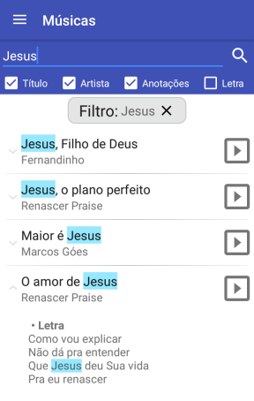
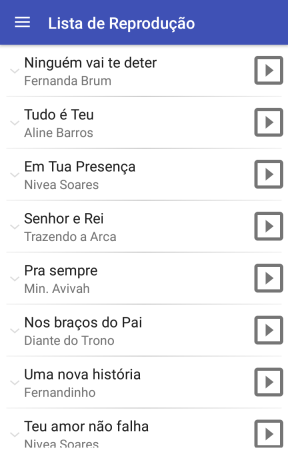
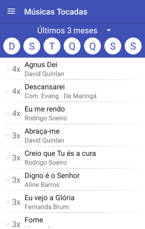
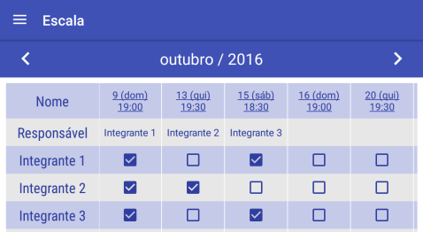
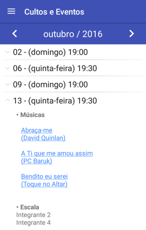
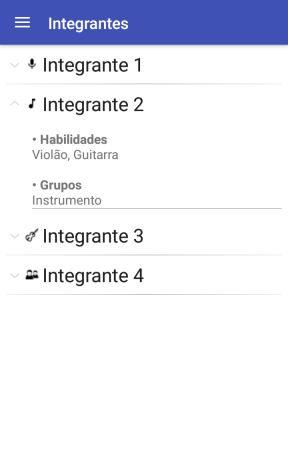
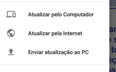

- Lista de Músicas
-
Exibe a lista com todas as músicas cadastradas;
Pesquise termos específicos para encontrar a música desejada;
Visualize a letra da música, anotação e histórico;
Inicie uma apresentação no computador ou uma transmissão para outros aparelhos. <- (requer conexão local*)

- Lista de Reprodução
-
Exibe a lista de reprodução selecionada no programa Holyrics no computador. <- (requer conexão local*)

- Músicas Tocadas
-
Exibe a lista das músicas mais tocadas no período informado e as respectivas datas.
Você pode filtrar a lista selecionando os dias da semana específicos que desejar.

- Escala
-
Exibe a escala dos integrantes.
Você pode clicar no título da coluna para visualizar os detalhes do culto/evento.

- Cultos e Eventos
-
Exibe a lista de todos os cultos e eventos;
Visualize as músicas e os membros escalados.

- Integrantes
-
Exibe a lista de todos os integrantes cadastrados no programa.

- Controle Remoto da Bíblia <- (requer conexão local*)
-
Tela para iniciar e controlar a apresentação de versículos no computador.
Clique no versículo anterior ou posterior para alterar o versículo em exibição.
Utilize também os botões de volume para alterar o versículo em exibição. Clique no botão "Apresentar" para exibir ou ocultar o versículo selecionado.
Acesse os últimos versículos selecionados pelo botão de histórico.
O versículo sempre será exibido conforme a versão da Bíblia e o tema selecionados no computador.
- Receber Transmissão <- (requer conexão local*)
-
Tela para espelhar o slide em exibição no computador ou receber uma letra transmitida por outro celular.
- Atualizações
-
Atualize os dados do celular através do computador. <- (requer conexão local*)
Ou pela internet. (Necessário criar uma conta pelo programa Holyrics e fazer o upload dos arquivos)
Envie os arquivos do celular ao PC.
Você pode utilizar a função "Enviar atualização ao PC" para sincronizar os arquivos em diferentes computadores.
Por exemplo: clicar em "Atualizar pelo Computador" para receber os arquivos do computador utilizado nos cultos e clicar em "Enviar atualização ao PC" para atualizar esses dados no computador de casa.
Obs.: Esse tipo de sincronização não atualiza todos os arquivos do programa, como por exemplo: temas, anúncios, versões da bíblia, etc.
Para uma atualização/sincronização completa, utilize o método "Backup" no menu "Ferramentas".

(conexão local*) - O celular e o computador precisam estar na mesma rede e o programa Holyrics aberto no computador.
Caso não exista uma rede local (Wi-Fi, por exemplo), você pode ativar o ponto de acesso (hotspot) do seu celular e conectar o computador para deixá-los na mesma rede.
Não é necessário ter internet disponível.
Para sua segurança, cadastre as senhas de controle nas configurações do programa.